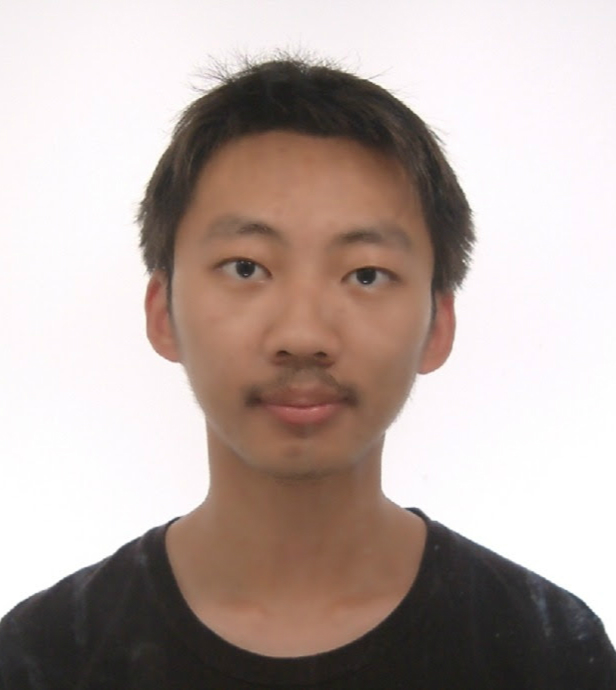

张静轩
项目经历
OpenALTO (前身为 OpenDaylight ALTO 以及 Sextant)
项目联系人, 2015 至今
- ALTO 协议官方开源实现。
- 设计并开发了 ALTO 在 OpenDaylight 上的主要功能模块。
- 负责项目在 OpenDaylight 社区的管理及代码审查。
- 创建并维护 OpenALTO 开源社区 (https://github.com/openalto/)。
- 在 IETF Hackathon 113 及 114 上进行了系统演示。
Unicorn: Unified Resource Orchestration for Multi-Domain, Geo-Distributed Data Analytics
架构与联系人, 2017 至 2019
- 首个面向科学大数据分析的多域多控制器编排系统。
- 协调来自欧洲原子能中心, 加州理工学院以及 Starlight 的合作者将系统部署在了加州理工学院高能物理数据中心。
- 在 SuperComputing 2017, 2018, 及 2019 大会上进行了系统演示。
- 代码开源： https://github.com/openalto/mercator-setup。
Devopen: SDN IDE
项目组长, 2016 至 2017
- 首个支持对软件定义网络进行可视化编程的IDE。
- 集成了完成的软件定义网络运维生命周期。
- 在 OpenDaylight 2016 峰会以及 SuperComputing 2016 大会上进行了系统演示及教学。
- 代码开源：https://github.com/snlab/Devopen。
SeL4-based HD-ElastOS (Kortide, Shanghai)
实习, 2014.10 至 2015.04
- 将 seL4 微内核移植到多个嵌入式硬件平台上 (pandanboard, lamobo M1 等)。
- 将 ElastOS 嵌入式系统的运行时移植到 seL4 微内核上。
教育经历
耶鲁大学
访问学者 (计算机科学), 2018.11 - 2020.10
同济大学
博士 (计算机科学), 2017.03 - 至今
硕士 (计算机科学), 2015.09 - 2017.03
本科 (计算机科学), 2013.03 - 2015.07
本科辅修 (数学, 数理强化班), 2011.09 - 2013.01
获奖
ACM 学生科研比赛参与奖 (2020).
CSC 公派留学奖学金 (2018).
同济大学优秀毕业生 (2015).
全国电子设计大赛二等奖 (2014).
美国数学建模大赛二等奖 (2014).
全国大学生数学竞赛上海赛区一等奖 (2012).
发表文章
互联网标准
RFC 9275 - ALTO Extension: Path Vector
RFC 9241 - Content Delivery Network Interconnection (CDNI) Request Routing: CDNI Footprint and Capabilities Advertisement using ALTO
RFC 9240 - ALTO Extension: Entity Property Maps
Active Internet-Draft (IETF ALTO WG) - A Yang Data Model for OAM and Management of ALTO Protocol
Active Internet-Draft (IETF ALTO WG) - ALTO/H2: The ALTO Protocol using HTTP/2
会议/期刊
Dunefsky, J., Soleimani, M., Yang R., Ros-Giralt J., Lassnig M., Wuerthwein, F.K., Yang, Y.R., Monga, I., Gao, K. and Zhang, J., 2022. Transport Control Networking: Optimizing Efficiency and Control of Data Transport for Data-Intensive Networks. In Proceedings of the ACM SIGCOMM 2022 Workshop on Network-Application Integration (NAI), ACM.
Zhang, J., 2021. IntQOE: Integrated End-to-end QoE Optimization for Edge Computing Enabled Web Application. In Proceedings of the ACM SIGCOMM 2021 Workshop on Network-Application Integration (NAI), ACM.
Xiang, Q., Le, F., Zhang, J. and Yang, Y.R., 2021. Toward Stable Interdomain Network-Application Integration. In Proceedings of the ACM SIGCOMM 2021 Workshop on Network-Application Integration (NAI), ACM.
Zhang, J., Contreras, L., Gao, K., Cano, F. , Cano, P., Escribano, A. and Yang, Y.R., 2021. Sextant: Enabling Automated Network-aware Application Optimization in Carrier Networks. In Proceedings of the International Symposium on Integrated Network Management (IM), IFIP/IEEE.
Cheng Y., Luo N., Zhang, J., Antonopoulos T., Piskac R. and Xiang Q., 2021. Looking for the Maximum Independent Set: A New Perspective on the Stable Path Problem. In Proceedings of the 40th IEEE International Conference on Computer Communications (INFOCOM), IEEE.
Zhang, J. and Yang, Y.R., 2020. COC: Hierarchical Coflow Ordering for WAN Bandwidth Optimization in Inter-Data Center. In Proceedings of the Annual conference of the ACM Special Interest Group on Data Communication on the applications, technologies, architectures, and protocols for computer communication (SIGCOMM), ACM.
Zhang, J., Gao, K., Yang, Y.R. and Bi, J., 2020. Prophet: Toward Fast, Error-Tolerant Model-Based Throughput Prediction for Reactive Flows in DC Networks. In Transactions on Networking (TON), IEEE/ACM.
Xiang, Q., Zhang, J., Gao, K., Lim, Y.S., Le, F., Li, G. and Yang, Y.R., 2020, July. Toward Optimal Software-Defined Interdomain Routing. In Proceedings of the 39th IEEE International Conference on Computer Communications (INFOCOM), IEEE, 1529-1538.
Xiang, Q., Wang, X., Zhang, J., Newman, H., Yang, Y.R. and Liu, J., 2019. Unicorn: Unified Resource Orchestration for Multi-Domain, Geo-Distributed Data Analytics. In Future Generation Computer Systems, Elsevier.
Xiang, Q., Zhang, J., Wang, X., Liu, J., Guok, C., Le, F., MacAuley, J., Newman, H. and Yang, Y.R., 2018. Fine-Grained, Multi-Domain Network Resource Abstraction as a Fundamental Primitive to Enable High-Performance, Collaborative Data Sciences. In Proceedings of the International Conference for High Performance Computing, Networking, Storage and Analysis (SC), ACM.
Gao, K., Zhang, J., Yang, Y.R. and Bi, J. 2018., Prophet: Fast Accurate Model-based Throughput Prediction for Reactive Flow in DC Networks. In Proceedings of the 37th IEEE International Conference on Computer Communications (INFOCOM), IEEE, 720-728.
Wang, W., Zhang, J., Guo, D., Xiang, Q., Huang, C., Chang, J. and Zhang, L. 2016. Towards an emerging cloudware paradigm for transparent computing. In Proceedings of the 9th IEEE/ACM International Conference on Utility and Cloud Computing (UCC), IEEE, 43-48.
专业技能
精通 YANG 模型与 OpenDaylight 网络控制器开发。
精通 Python 与 JAVA 应用开发。
熟悉 OpenFlow 与 P4 交换机以及基本的网络运维。
熟悉 Docker 以及 Kubernetes 等容器技术。
熟悉全栈 web 开发。
熟悉 ARM 嵌入式编程。
个人简介

本人系同济大学计算机系在读博士研究生，师从美国耶鲁大学 Y. Richard Yang
(杨阳) 教授。本人于 2018 至 2020 年曾获国家留学基金委 (CSC)
联合培养博士奖学金资助，赴美国耶鲁大学进行学术交流。博士期间主要研究方向为大规模数据密集型网络的资源可见性、智能化以及控制优化的研究，曾在TON，INFOCOM，SC等顶级国际会议和期刊发表学术成果。本人也活跃于
IETF ALTO 互联网标准工作组以及 OpenDaylight
开源软件社区，已发表数篇网络标准及草案，包括 3 篇 RFC 以及 2
篇工作组草案。
详情请见我的个人主页: https://jensen-zhang.site/